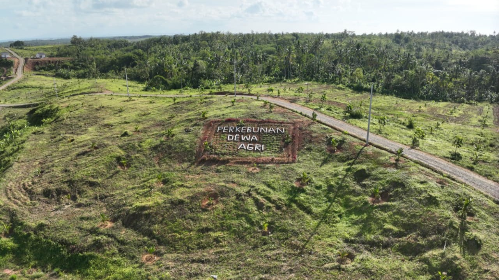
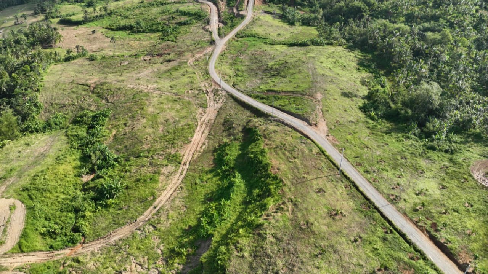
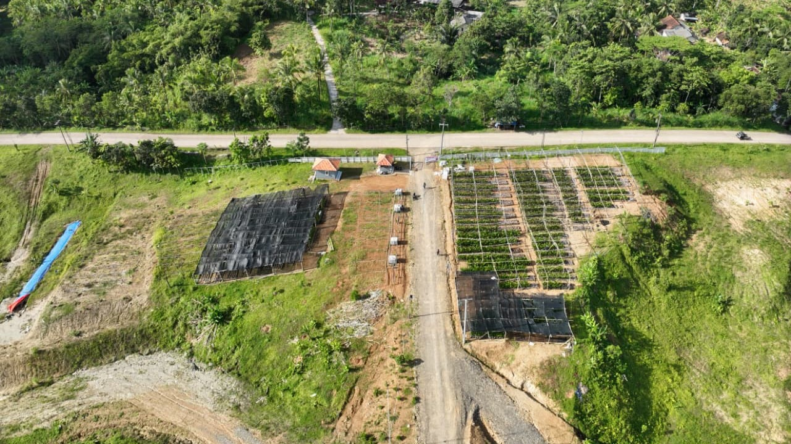

Our Plantation




Dewa Agri was founded with the vision of building a sustainable and integrated coconut industry in Indonesia. Inspired by the importance of coconut as the “fruit of life”, our company focuses on transforming coconut resources into high-value products while maintaining environmental responsibility.
Our operations are located in regions where coconut plantations are abundant. Through modern processing facilities and collaboration with local farmers, we aim to improve productivity, product quality, and economic value for surrounding communities.
In addition to coconut cultivation, Dewa Agri also implements intercropping practices with horticultural crops. By integrating horticulture within coconut plantations, we optimize land use, enhance biodiversity, and create additional income opportunities for farmers while maintaining soil health and long-term agricultural sustainability.
By integrating plantations, processing facilities, sustainable energy initiatives, and diversified agricultural practices, we are building a long-term ecosystem that supports responsible production, empowers local communities, and contributes to a more sustainable future.
We ensure that all operations are environmentally responsible by utilizing every part of the coconut and minimizing waste.
We work closely with local farmers and communities, providing fair trade opportunities and supporting regional economic development.
Through modern technology and research, we continuously improve the efficiency and quality of our coconut processing operations.


